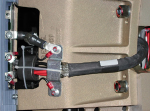
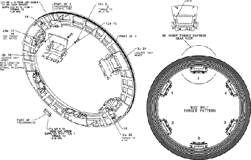

Proprietary to General Electric
Direction 5193855-800, Rev# 4
LS 5.X RT Ltd. Access Service Information Adv
Proprietary to General Electric |
| Required Persons | Preliminary Reqs | Procedure | Finalization |
|---|---|---|---|
| 3 | Timing Not Applicable | 4 hours | 1 hour |
This procedure describes the Slipring Platter replacement.
| Last Revised: | 5 March 2008 |
| Item | Qty | Effectivity | Part# | Manufacturer | |
|---|---|---|---|---|---|
| Standard FE Tool Kit | 1 | - | - | - | |
| Installation Support Kit | 1 | - | - | - | |
| Item | Qty | Effectivity | Part# | Manufacturer |
|---|---|---|---|---|
| Tie-wraps and pads | - | - | - | |
| Hand towels and cleaners, for cleanup | - | - | - | |
| Gloves (included in installation support kit) | - | - | - |
| Item | Qty | Effectivity | Part# | Manufacturer | |
|---|---|---|---|---|---|
| Slipring Platter | 1 | - | See IPL | - | |
| ELECTROCUTION HAZARD | |
| HIGH VOLTAGE PRESENT. | |
| Use proper lockout/tagout procedures before replacing components. See safety menu of Service Document gui for appropriate procedures. |
| SEVERE INJURY CAN RESULT. | |
| THE SLIPRING AND CAST MOUNTING BRACKETS WEIGH ABOUT 150 LB (68 KG). | |
| Three (3) PEOPLE MINIMUM ARE NEEDED TO REMOVE THIS ASSEMBLY. |
| Potential for Injury. | |
| A Ladder May be Required to Perform this Procedure. | |
| Follow All Ladder Safety Rules. |
| Follow ALL required safety and PPE procedures customary for your organization when working on this product. | |
| NOTE: | Some steps may require service in blind areas. |
| Condition | Reference | Eff |
|---|---|---|
Only trained service personnel should service the GE CT Scanner. | - | - |
Gantry rotated to a position that offers the best service access, before turning off gantry 120/ 208 VAC. | - | - |
Remove Gantry covers as required.
Refer to Parts Replacement → Gantry → Enclosure → (Cover Removal Procedure).
Remove Slipring safety covers.
Tilt Gantry forward to +30 degrees.
| ELECTROCUTION HAZARD | |
| HIGH VOLTAGE PRESENT. | |
| Use proper lockout/tagout procedures before replacing components. See safety menu of Service Document gui for appropriate procedures. |
Completely shut down system power. (A1, Lockout/Tagout)
Remove rear cover mounting brackets, both sides. Three (3) 12mm bolts on each mount.
Remove brush block and tie-wrap the brush block to the stationary member out of harm's way.
The brush block assembly may be entirely removed if desired.
Remove all wiring tie-wraps on the Ring inside diameter.
Write down all filter and cabling connections.
Write down tie-wrap locations and sizes.
Illustration 1: Slipring Filter

Disconnect all cables from Slipring.
Remove antenna bracket with antenna assembly.
| NOTE: | Follow this procedure EXACTLY. Do not take shortcuts. Both axial and radial runout as well as Gantry balance are at stake. |
Rotate Gantry so signal PCB is in 12 o'clock position. This puts the Tube at 12 o’clock also.
Engage axial rotating lock to prevent Gantry rotation.
Mark Slipring, Slipring cast mounting brackets, and rotating casting with numbers 1 through 6.
Start at 12 o’clock and write “1” on all three surfaces.
Continue clockwise with the next mount with number 2. Do this for all remaining mounts.
This will ensure everything will be installed in the same locations.
Open new Slipring box. Put on the gloves.
Place top cover on the floor foam side up.
Flip the new Slipring over in the box, so that brass is face down.
Install the signal PCB.
Replace the existing Transmitter module that came mounted on the Slipring with the 5.X RT specific transmitter module also shipped with the Slipring. (The same Slipring is used on multiple products; only the transmitter changed for the 5.X RT system.)
On the Gantry, remove all twelve (12) 12mm bolts securing the cast mounting brackets to the rotating casting.
Leave the bolts at the 12 o'clock position for last.
| SEVERE INJURY CAN RESULT. | |
| THE SLIPRING AND CAST MOUNTING BRACKETS WEIGH ABOUT 150 LB (68 KG). | |
| Three (3) PEOPLE MINIMUM ARE NEEDED TO REMOVE THIS ASSEMBLY. |
| NOTE: | Remember there are three (3) mounts with pins, so pull ring straight off. Use a flat-blade screwdriver to separate the brackets from the rotating casting if necessary. |
After removing the last bolts, carefully remove Slipring and cast mounting bracket assembly.
Place the old ring, brass side down, on top of foam cover.
Align the signal PCB with the replacement ring to simplify the transfer of the cast mounting brackets to the new Slipring.
| NOTE: | Inspect all interfaces for burrs, debris, or other imperfections. These items can result in runout failures, requiring a repeat of this entire procedure. |
Transfer each of the cast mounting brackets one at a time. Ensure these brackets are installed in the same position from old to new Slipring.
Place cast mounting bracket number 1 on the new Slipring aligning 6 mm pin in slot.
There are four (4) holes that attach the cast mounting bracket to the Slipring. The hole diagonal from the pin is 6.2mm. The other three are 7mm. The 6.2mm hole and 6mm pin are to help align the ring.
Place the 6mm bolt in the 6.2mm hole and align over Sslipring insert.
Gently pull or push the cast mounting bracket radially out (away from ISO). Use the pin slot as the stop and the 6.2mm hole for alignment.
Tighten the 6mm bolt until the lock washer starts to compress. Just tighten (snug) enough so that bolts are engaged.
Install the other three (3) 6mm bolts and snug until they are engaged.
Once the Slipring is installed, set the torque on all of the bolts to:
| 4.5 lb-ft | 6 N-m | 53 lb-in | 61.5 kg-cm |
Repeat Step 6 for all six (6) cast mounting brackets.
Align new Slipring and cast mounting brackets with the rotating casting.
Ensure marked numbers are aligned, 1 to 1, 2 to 2 etc.
Align guide pins with holes on each of the three (3) cast mounting brackets to rotating base.
Push until seated. Maintain pressure against the ring and hand tighten all 12 mm bolts.
Release axial rotational lock.
Rotate Gantry by hand as needed to ease access to Slipring mounting bolts.
Set final torque. Refer to Illustration 2.
Start with the three (3) pinned cast mounting brackets.
| NOTE: | For a larger version of this illustration, click on the PDF icon below. |
Media File 1: Full Size Illustration: Slipring Platter Torque Pattern

Illustration 2: Slipring Platter Torque Pattern

Start with bracket location # 1 and set the torque on the two (2) 12 mm bolts to:
| 49 lb-ft | 66.4 N-m | 587.7 lb-in | 677 kg-cm |
Repeat Step 10 for cast mounting bracket # 2 through # 6 in order.
Start with bracket location # 1 and torque the four (4) 6mm bolts in order 1, 2, 3, 4. Reference Illustration 2. Set torque to:
| 4.45 lb-ft | 6 N-m | 53 lb-in | 61.2 kg-cm |
Repeat Step 13 for location # 2 through # 6 in order.
Connect the filters, wiring harnesses and ground clamps to the Slipring.
Mount and adjust the Dial Indicator so that the plunger tip rides on the blue edge of the HSDCD ring.
Rotate the Gantry by hand and measure the Radial Runout.
Radial runout should not exceed .0319 inches (32 mils, 0.81 mm).
Reference Radial Runout Adjustment, if out of specification.
Adjust the Dial Indicator and place the plunger tip directly on the brass surface of ring 12.
Rotate the Gantry by hand and measure the Axial Runout.
Axial runout should not exceed .0327 inches (33 mils, 0.83 mm).
Reference Axial Runout Adjustment if out of specification.
Secure all rotating harnesses with tie-wraps as observed at start of this procedure ( Illustration 1).
Install Antenna/Receiver assembly. Reference “HSDCD Slipring Receiver Adjustment Procedure,” located in S-A HSDCD Slip Ring Adjustments.
Install brush block assembly (see Slipring Brush Block Replacement).
Install Slipring safety covers.
Restore power to system.
| POTENTIAL FOR DEATH OR SEVERE INJURY | |
| HIGH VOLTAGE PRESENT ON SLIPRING | |
| Properly shut down the system, and follow Lockout/Tagout procedures. |
Identify the “High” and “Low” physical locations on the Slipring.
With the gantry tilted forward + 30 degrees, place the “High” location at 12 o’clock.
Loosen-do not remove-the four (4) 6 mm bolts at the cast mounting bracket to Slipring interface.
Loosen-do not remove-the four (4) 12 mm bolts on each of the six (6) cast mounting brackets.
Physically lift/push/pull the ring to release binding tension.
At + 30 degree tilt, gravity effects are minimized.
Re-torque bolts per Install New Slipring, Step 9 through Install New Slipring, Step 13. Tightening sequences must be followed for desired results.
| POTENTIAL FOR DEATH OR SEVERE INJURY | |
| HIGH VOLTAGE PRESENT ON SLIPRING | |
| Properly shut down the system, and follow Lockout/Tagout procedures. |
Identify the “High” and “Low” physical locations on the Slipring.
With the Gantry tilted forward + 30 degrees, place the “Low” location at 6 o’clock.
Loosen-do not remove-the four (4) 6mm bolts at the cast mounting bracket to Slipring interface.
Loosen - do not remove - the four (4) 12mm bolts on each of the six (6) cast mounting brackets.
Physically lift/push/pull the ring to release binding tension.
At + 30 degree tilt, gravity effects are minimized.
Re-torque bolts per Install New Slipring, Step 9 through Install New Slipring, Step 13. Tightening sequences must be followed for desired results.
| If readings are still out of specification continue with Step 7. | |
Inspect the one (1) or two (2) closest cast mounting brackets for proper seating at both the Slipring and rotating casting interfaces.
All bolts should be properly torqued.
No gaps greater than .005 inches (0.127 mm) at any interface edge.
Correct any “High” gaps greater than .005 inches (0.127 mm) at any interface edge.
Recheck both Radial and Axial runout.
Using standard notebook paper (0.003 inches (0.076 mm) thick nominal) make shims for one (1) or two (2) mounting locations on either side of the “Low” location.
A single sheet folded in half when compressed will be 0.005 inches (0.127 mm) nominal.
Remove the four (4) 6 mm bolts at the cast mounting bracket to Slipring interface.
Slide shim between the Slipring and cast mounting bracket to block the two (2) outside diameter holes.
Carefully puncture, remove, trim and reinstall shim.
Install the 6mm bolts and torque per Install New Slipring, Step 13.
Repeat this procedure as needed.
| NOTE: |
|
Hardware Reset using Console Gantry reset (Hardwire).
Acquire 10 scouts: (120kV/40mA, 1000mm table movement)
Acquire 100 axials: (120kV/80mA, 0.5 sec. Scan)
Acquire 1 helical: (120kV/40mA, 30 sec. Scan)
Acquire 10 axial scans: (120kV/400mA, 4 sec. Scan)
Verify NO increase in LSCOM errors. To check LSCOM Statistics: Select Log Viewing, System Browser, Run Time Statistics, RCOM/SCOM Statistics.
Verify NO increase in corrected or uncorrected FEC errors. To check HSDCD Statistics: Select Log Viewing, System Browser, Run Time Statistics, DIP Statistics.